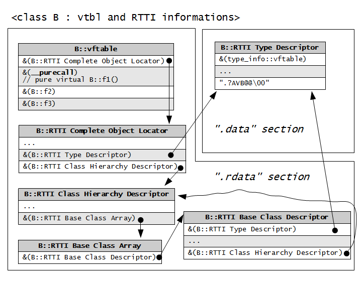

"The Old New Thing" p280-282で"__purecall"について紹介されている。 C言語系/呼び出し規約/x86 をまとめたこともあり、"XXYYcall"とくれば呼び出し規約のことか、と思ったが違うらしい。
ということでずっと気になっていたんですが、この度ようやくもやもやが晴れました。"__purecall"というよりはC++の実行時エラー R6025 "pure virtual function call" の方で有名になっているようです。
「実行時エラー」というあたりから、バグとしてはかなり厄介な印象を受けます。
で、この厄介なバグを回避するための結論を先に書いてしまうと「コンストラクタやデストラクタの中で仮想関数を呼ない」というのが複数箇所で書かれています。"The Old New Thing"の"What is __purecall?"記事で書かれていますし、"C++プログラミングの処方箋"(翔泳社, Stephen C.Dewhurust, 初版第一刷)の「鉄則75 コンストラクタとデストラクタにおける仮想関数の呼び出し」にも書かれています。
本記事では「コンストラクタやデストラクタの中で仮想関数を呼ない」の理論面について簡単に紹介し、実際にR6025が発生するサンプルコードを示し、アセンブラリストや実行時の内部データ構造を追うことで"__purecall"との関連を調べていきます。
環境：
OS: Windows 7 Professional 日本語版, 32bit CPU: Intel Core i3 RAM: 4GB Visual C++ 2008 Express Edition SP1 cl: Microsoft(R) 32-bit C/C++ Optimizing Compiler Version 15.00.30729.01 for 80x86 link: Microsoft (R) Incremental Linker Version 9.00.30729.01
参考図書：
Amazon.co.jp: C++プログラミングの処方箋 (Programmer's foundations) : スティーブン・C. デューハースト, Dewhurst,Stepehn C., エイムネクスト: 本
参考URL：
- What is __purecall? - The Old New Thing
- Debugging walkthrough: Diagnosing a __purecall failure - The Old New Thing
- GameEngineJP Blog: __purecall とは何か？
- __purecall? [Archive] - CodeGuru Forums
- Description of the R6025 run-time error in Visual C++
もしも内容に間違いがあったら、メールなりブクマコメントなりでご指摘ください。
コンストラクタやデストラクタを仮想関数から呼ばない方が良い理由
最初に理論面から攻めていきます。コンストラクタやデストラクタを仮想関数から呼ばないほうが良い理由の理論的根拠です。
ちなみに、先に"C++ コンストラクタ 仮想関数"でググってあらかた「あーそーゆーこと」で理解できた人は以下のサブセクションはスキップしちゃっていいです。ってかそのレベルであれば、本記事なんてそもそも読む必要ないかも。
そもそも仮想関数を使う目的は？
まず仮想関数を使う目的を復習してみます。
- 基底クラスとその派生クラスがあり、
- 基底クラスのメソッドを派生クラスでオーバーライドしているケースで、
- 基底クラスのポインタを使って派生クラスでオーバーライドしたメソッドを呼ぶ
というのがよくあるパターンだと思います。つまり
- 基底クラスに仕様とデフォルト実装を定義して、
- 派生クラスで実装したのを実際に使う。
- 呼ぶ方は基底クラスのポインタ経由で呼べれば、呼び先がどの派生クラスか気にしなくて良いのでラッキー。
- ・・・って感じで、インターフェイスと実装を上手く分離したい。
というのが、仮想関数を使うおおよその目的ではないでしょーか。
class B {
public:
virtual void foo() { cout << "B::foo()"; };
};
class D : public B {
public:
void foo() { cout << "D::foo()"; };
};
...
D d;
B *bp = &d;
bp->foo() // "D::foo()"
↑こーゆー使い方ですね。ここで"virtual"を外してしまうと、Bクラスのポインタ経由で呼び出すときにBクラスのfoo()メソッドが呼ばれてしまうので、「仕様は基底クラスで、実装は派生クラスで」というオブジェクト指向ならではの分離テクニックが活かせなないわけです。
逆に、意図的に「いや、virtualを付けたけど、ここでだけはBクラスのfoo()を呼びたいんだ」ってーときはスコープを明示します。
D d; B *bp = &d; bp->B::foo() // "B::foo()"
JavaとかPHPとかPythonとかのメソッドは、基本的に全部virtualになってると考えられます。Javaの例だと、
class Foo { public void m1() { System.out.println("Foo::m1()"); } } class Bar extends Foo { public void m1() { System.out.println("Bar::m1()"); } } class Main { public static void main(String args[]) { Bar b = new Bar(); Foo o1 = b; o1.m1(); } }
実行結果出力：
Bar::m1()
として、実装クラス(Bar)のインスタンスを基底クラス(Foo)型で参照しても、自動的に実装クラス側のm1()が呼ばれます。
例： http://ideone.com/70RbR
ところで個人的な話ですが、どうにも「オーバーライド(over ride)」って馴染めないんですよね。「オーバーロード(over load)」と間違えそうで。上書きしてるんだから「オーバーライト(over-write)」でいいんじゃないかと思うんですが、まぁしゃーないですな。
仮想関数とメモリレイアウト
「C++プログラミングの処方箋」の「鉄則78 仮想関数とオーバーライド」を読んでください・・・で済ませるのもさすがに不親切です。
本記事では単独継承しか使いませんので、単独継承での仮想関数とメモリレイアウトについて簡単に紹介します。
概念としてざっくりまとめてしまうと、
- 内部的に関数へのテーブルを用意してクラスに関連付けておきます。
- この関数テーブルが"vtbl"とか呼ばれてます。
- で、関数を呼びたい場合は関数のアドレスを直接呼ぶのではなくて、
- 関数テーブルのインデックスを介してアドレスを取り出し、それを使うようにします。
次のようなクラスがあるとします。実装はどこかで定義されているとしておきます。
class B {
public:
virtual void f1();
virtual void f2();
virtual void f3();
};
すると、Bクラス用のvtblは
vtbl[0] = &B::f1; vtbl[1] = &B::f2; vtbl[2] = &B::f3;
↑こんな感じのものがグローバルで用意されます。コンパイラがデータとして生成してくれます。
vtblは各クラスに一つあればOKです。後はBクラスのインスタンスを作るときに、vtblへのポインタを含めておきます。
↓コンパイラごとの細かい実装の違いは無視して、概念的なイメージとしてはこんな感じになります。
[Instance of B (1)]
+-------------------+ vtbl for B
| vtbl |--+--> +--------------+
+-------------------+ | | [0] = &B::f1 |
| other members | | | [1] = &B::f2 |
+-------------------+ | | [2] = &B::f3 |
| +--------------+
[Instance of B (2)] |
+-------------------+ |
| vtbl |->+
+-------------------+
| other members |
+-------------------+
使うときのイメージは、
B *bp = new B; bp->f3();
↑のf3()呼び出しは
(*(bp->vtbl)[2])(bp);
に変換されます(あくまでもイメージです)。引数のbpはthisポインタ用です。
で、例えばこのクラスBを単独継承したクラスDで、f2(), f3()をオーバーライドするとします。どうするかというと、クラスD用のvtblをクラスBのvtblからパクって、f2, f3をクラスDのf2, f3のアドレスに書き換えればOKです。コンパイラがやってくれます。
class D : public B {
public:
virtual void f2();
virtual void f3();
};
→
[Instance of D] +---------------+ vtbl for D | vtbl |---> +--------------+ +---------------+ | [0] = &B::f1 | | B members | | [1] = &D::f2 | +---------------+ | [2] = &D::f3 | | D members | +--------------+ +---------------+
こうしておけば、基底クラス(=仕様)型のポインタで派生クラス(=実装)の実体を受けても、
B *bp = new D; bp->f3();
→
(*(bp->vtbl)[2])(bp);
となり、この時のvtblはクラスDのvtblなので、D::f3()が呼ばれるというわけです。
関数の引数に渡すときも基底クラスのポインタで受けるように、
void foo(B *bp) {
....
bp->f3();
....
}
としておけば、Bクラスから派生したクラスのインスタンスならどれでも、そのf3()を呼べるようになるというわけです。まぁコールバック関数(=仕様)を介したcaller(=利用者)とcallee(=実装)の分離テクニックの発展形とも言えます。
基底クラスのコンストラクタから仮想関数を呼んでおくことで、派生先でコンストラクタの挙動をカスタマイズしたいんだけど・・・
"C++ コンストラクタ 仮想関数"でggrks.
簡単にまとめちゃうと、基底クラスのコンストラクタ実行中は派生クラスのメンバの準備が完了していない。派生クラスの仮想関数が呼べないわけです。ということで、基底クラスのコンストラクタ中で仮想関数を呼ぶと、基底クラスの実装が呼ばれてしまいます。
class B {
public:
B() { foo(); };
virtual void foo() { cout << "B::foo()"; };
};
class D : public B {
public:
void foo() { cout << "D::foo()"; };
};
int main(...) {
D d;
...
}
希望としては「D::foo()が基底クラスのコンストラクタで呼ばれて欲しい」のですが、現実はB::foo()が呼ばれます。
例：http://ideone.com/ODIdH
純粋仮想関数が混ざってくるとどうなるか
純粋仮想関数を使えば、Javaで言うところの抽象クラスやインターフェイスを作ることが出来ます。
ここで、前のサブセクションで取り上げた「基底クラスのコンストラクタ実行中は派生クラスの仮想関数は使えない」というのを知らないプログラマが、「よし、いっそのこと基底クラス側は純粋仮想関数にしてしまい、派生クラス側でのカスタマイズを強制しちゃおう」とするとどうなるでしょうか？
pure_callXX.cpp:
#include <stdio.h> class B { public: B() { foo(); }; virtual void foo() = 0; }; class D : public B { public: void foo() { printf("D::foo()\n"); }; }; int main() { D d; return 0; }
コンパイルは成功しますが、リンクでエラーになります：
pure_callXX.obj : error LNK2019: 未解決の外部シンボル "public: virtual void __thiscall B::foo(void)" (?foo@B@@UAEXXZ) が 関数 "public: __thiscall B::B(void)" (??0B@@QAE@XZ) で参照されました。 pure_callXX.exe : fatal error LNK1120: 外部参照 1 が未解決です。
B:foo()を定義してあげればリンカエラーは無くなるのですが、そもそも純粋仮想関数にした意味が無くなっちゃいます。
ということで、まぁ大抵のケースではこの辺りで諦め、Google先生に助けを求めると思います。
以上、「コンストラクタやデストラクタから仮想関数を呼ばないほうが良い理由」でした。
続いて、いよいよR6025を発生させ、"__purecall"の正体に迫っていきます。
R0625の発生 "pure virtual function call" と "__purecall"
最初にR6025を発生させるサンプルを紹介します。続いて、R6025の発生が純粋仮想関数と"__purecall"にどう関連するのか、アセンブラコードやリンカが生成したMAPファイルを見ながら調べていきます。
本セクションのサンプルコードのzipアーカイブは以下のURLからダウンロードできます。整形して見やすくしたアセンブラリストやMAPファイルも含まれています。
pure_call_R6025.zip (71KB)
R6025が発生するサンプルコード
pure_callXX.cppでは、コンストラクタ中で純粋仮想関数を直接呼んでいたためリンカエラーとして「未実装の純粋仮想関数を基底クラスから呼んでしまっている」状況を検出できました。
逆に言えば、間接的に純粋仮想関数を呼んでしまうとリンク段階でも検出できず、未定義の挙動 = WindowsならR6025 "pure virtual function call" として実行時エラーとなってしまいます。
ということで、pure_callXX.cppをちょっと弄ればR6025が発生します。
pure_call_R6025_1.cpp:
#include <stdio.h> class B { public: virtual void foo() = 0; // 純粋仮想関数を呼ぶだけの、普通のインスタンスメソッド void bar() { this->foo(); }; // 純粋仮想関数を直接呼ぶのではなく、普通のインスタンスメソッドを介して呼ぶ B() { bar(); }; }; void B::foo() { printf("B::foo()\n"); } class D : public B { public: void foo() { printf("D::foo()\n"); }; }; int main() { D d; return 0; }
コンパイル＆実行：
> cl pure_call_R6025_1.cpp > pure_call_R6025_1 R6025 - pure virtual function call
他にもMicrosoftのKB125749では、コンストラクタ中でthisポインタを外部の関数に渡すことで間接的に純粋仮想関数を呼び、実行時にR6025が発生するC++のサンプルコードが紹介されています。
コンストラクタ中では自分のインスタンスの初期化が完了してないわけですから、thisを外に曝す事自体がそもそもバグの原因になりそうで、自分は怖くてやったこと無いんです。まぁそれをやってしまうと、R6025などが発生しちゃうんですね・・・。
純粋仮想関数とvtblと"__purecall"
メモリレイアウトがどうなっているのか、まずはアセンブラリストから追って見ます。foo()ひとつだけでは寂しいので、いくつか追加した次のサンプルを使います。
pure_call_R6025_2.cpp:
class B { public: int a; int b; B(); int f0(); virtual int f1() = 0; virtual int f2(); virtual int f3(); }; B::B() { a = f0(); } int B::f0() { return f1(); } int B::f2() { return a + b; } int B::f3() { return a * b; } class D : public B { public: int c; int d; int e; int f1(); int f4(); int f5(); }; int D::f1() { return c + d; } int D::f4() { return d + e; } int D::f5() { return e + c; } int main() { D d; return 0; }
これを、アセンブラリスト付き＋リンク時にMAPファイル生成でコンパイルします。
> cl /FAsc pure_call_R6025_2.cpp /link /MAP:pure_call_R6025_2.map
.objと.exeファイル、pure_call_R6025_2.cod(アセンブラリスト)、pure_call_R6025_2.map が生成されます。
.exeを実行してみると予想通りR6025が発生します（結果省略）。
では生成されたアセンブラリスト(pure_call_R6025_2.cod)を見ていきましょう・・・って、B::f0が"?f0@B@@QAEHXZ"という名前になってたり、クラスBのvtblが"??_7B@@6B@"になってたりで非常に読みづらいです。まぁ人間が読むものじゃなくてコンパイラとリンカが処理するシロモノなので当然っちゃー当然なんですが。
とゆーわけで、余分なコメントとか色々取り払って、"??_7B@@6B@"とかも人間寄りの文字列に置換して分かりやすくしたのを pure_call_R6025_2_s3.cod としてサンプルコードのzipアーカイブに入れてあります。
とりあえずざっくり眺めて、vtblとRTTI周りの関連を図にしてみました。

仮想関数がそれぞれの"vftable"にまとめられ、純粋仮想関数である B::f0 は "__purecall" というシンボルを指すようになっています。
では "__purecall" の実体はどこにあるのか？これはリンク時に生成されるMAPファイルを見れば一目瞭然です。
pure_call_R6025_2.map:
... Start Length Name Class 0001:00000000 000063c4H .text CODE ... Address Publics by Value Rva+Base Lib:Object ... 0001:00000160 __purecall 00401160 f LIBCMT:purevirt.obj
LIBCMTライブラリ内の purevirt.obj に収められており、実行時アドレスは("Rva+Base") 0x00401160になることが分かります。
面白そうなので、OllyDbgで読み込み、それぞれのvftableの中身を見てみます。
もともとのアセンブラリストから、B,Dそれぞれのvftableの識別名は
PUBLIC ??_7B@@6B@ ; B::`vftable' PUBLIC ??_7D@@6B@ ; D::`vftable'
です。これをMAPファイルで探してみると、セクション番号#2(=".rdata"セクション)、Rva+Base = 0x40811c, 0x40812c に展開されることが分かります。
0002:0000011c ??_7B@@6B@ 0040811c pure_call_R6025_2.obj 0002:0000012c ??_7D@@6B@ 0040812c pure_call_R6025_2.obj
OllyDbgで覗いてみます：
0040811C 60 11 40 00 50 10 40 00 00408124 70 10 40 00 40 9A 40 00 0040812C 90 10 40 00 50 10 40 00 00408134 70 10 40 00 62 61 64 20
分かりやすく整形してみます：
[00408118] 004099F8 ; "??_R4B@@6B@" = B::RTTI Complete Object Locator [0040811C] = B::vftable 00401160 ; B::f0 => __purecall 00401050 ; "?f2@B@@UAEHXZ" = B::f2 00401070 ; "?f3@B@@UAEHXZ" = B::f3 [00408128] 00409A40 ; "??_R4D@@6B@" = D::RTTI Complete Object Locator [0040812C] = D::vftable 00401090 ; "?f1@D@@UAEHXZ" = D::f1 00401050 ; "?f2@B@@UAEHXZ" = B::f2 00401070 ; "?f3@B@@UAEHXZ" = B::f3
・・・ちょーっと謎なのが、アセンブラリスト上だと
CONST SEGMENT
??_7B@@6B@ DD FLAT:??_R4B@@6B@ ; B::`vftable'
DD FLAT:__purecall
DD FLAT:?f2@B@@UAEHXZ
DD FLAT:?f3@B@@UAEHXZ
CONST ENDS
...
CONST SEGMENT
??_7D@@6B@ DD FLAT:??_R4D@@6B@ ; D::`vftable'
DD FLAT:?f1@D@@UAEHXZ
DD FLAT:?f2@B@@UAEHXZ
DD FLAT:?f3@B@@UAEHXZ
CONST ENDS
となってて、各vftableの[0]には"RTTI Complete Object Locator"のアドレスが入るはずなんですよ。なんですが、実際のMAPファイルのアドレスとメモリイメージを付きあわせてみると、
B::vftable = (DWORD*)(0x0040811C); B::vftable[-1] = B::RTTI Complete Object Locator; B::vftable[0] = __purecall; B::vftable[1] = B::f2; B::vftable[2] = B::f3; D::vftable = (DWORD*)(0x0040812C); D::vftable[-1] = D::RTTI Complete Object Locator; D::vftable[0] = D::f1 D::vftable[1] = B::f2; D::vftable[2] = B::f3;
となり、"Complete Object Locator"のアドレスが一つ分ずれてしまってるようにしか思えません。
が・・・まぁこれで動いてるんですから、正常のハズ・・・。どうなってんでしょー・・・。
まぁ本筋とは関係なさそうなので、スルーしちゃいます。
あとはOllyDbgなりImmunityDebuggerなりIDAなりWinDBGなり、お好みのデバッガを起動してmain関数から機械語単位でステップ実行していけば、
main() -> D::D() -> B::B() -> B::f0() -> __purecall
という流れが見えてきます。
関連シンボルだけをMAPファイルから抽出してまとめなおした pure_call_R6025_2.map2 を見ながらだと分かりやすいと思います。
pure_call_R6025_2.map2:
[.text] Rva+Base Publics by Value -------------------------- 00401000 ??0B@@QAE@XZ ; B::B 00401030 ?f0@B@@QAEHXZ ; B::f0 00401050 ?f2@B@@UAEHXZ ; B::f2 00401070 ?f3@B@@UAEHXZ ; B::f3 00401090 ?f1@D@@UAEHXZ ; D::f1 004010b0 ?f4@D@@QAEHXZ ; D::f4 004010d0 ?f5@D@@QAEHXZ ; D::f5 004010f0 _main 00401110 ??0D@@QAE@XZ ; D::D 00401160 __purecall ; LIBCMT:purevirt.obj [.rdata] Rva+Base Publics by Value ---------------------------- 0040811c ??_7B@@6B@ ; B::vftable 0040812c ??_7D@@6B@ ; D::vftable ...
__purecallの中身までは、今回の調査範囲外とさせて下さい。まぁSDK提供のライブラリということもありますし、とりあえず__purecall呼んでる箇所とそこに到るまでの流れが分かれば、本記事の内容としては十分じゃないでしょーか。
以上で純粋仮想関数をコンストラクタから呼んでしまうとR6025が発生する流れが分かりました。
最後に理論面と合わせて、R6025と"__purecall"についてまとめます。
まとめ
- R6025 "pure virtual function call" って何？
- コンストラクタ中で純粋仮想関数を呼んでしまったときの未定義挙動（実行時エラー）です。"pure virtual function call" = 純粋仮想関数です。実装が存在しないのが純粋仮想関数なので、呼んだらエラーになるのが自然の成り行きで、それがこの実行時エラーです。
- "__purecall" って何？
- vtblに純粋仮想関数を登録するときのダミーシンボルで、LIBCMT:purevirt.objに実体があります。間違って呼ばれたときに、R6025の実行時エラーを発生させる処理のようです。
- 派生クラスでちゃんと純粋仮想関数を実装してるのに、なんでR6025が発生するの？
- 基底クラスのコンストラクタが実行される時点では、基底クラスの仮想関数が呼ばれます。もしも基底クラスのコンストラクタ内から純粋仮想関数を呼んでいたら、派生クラスで実装した関数ではなく、基底クラスのvtblにダミーで登録された"__purecall"が呼ばれ、R6025が発生します。
- R6025を起こさないようにするには？
- コンストラクタから直接・間接を問わず純粋仮想関数を呼ばないようにします。直接呼んでいる場合はリンク時に検出されますが、間接的に呼んでいるとリンク時には検出できず、実行時エラーとなってしまいます。
- 他に仮想関数とコンストラクタで注意する点は？
- 前述のとおり基底クラスのコンストラクタ中では基底クラスの仮想関数が呼ばれてしまいます。したがって、基底クラスのコンストラクタで仮想関数を呼び、派生クラスでの仮想関数の実装により初期化時の挙動を変化させるようなテクニックは使わない方が良いでしょう。またこの議論はデストラクタにも当てはまりますので注意が必要です。